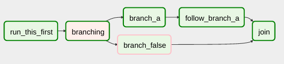
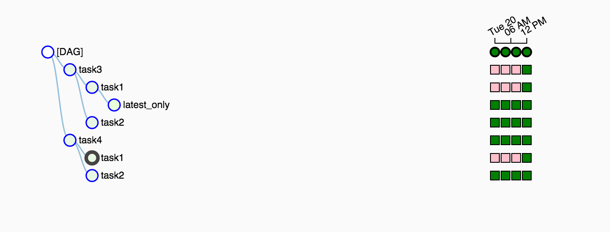
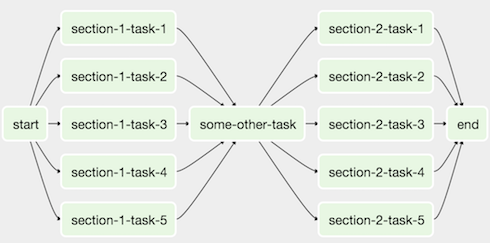
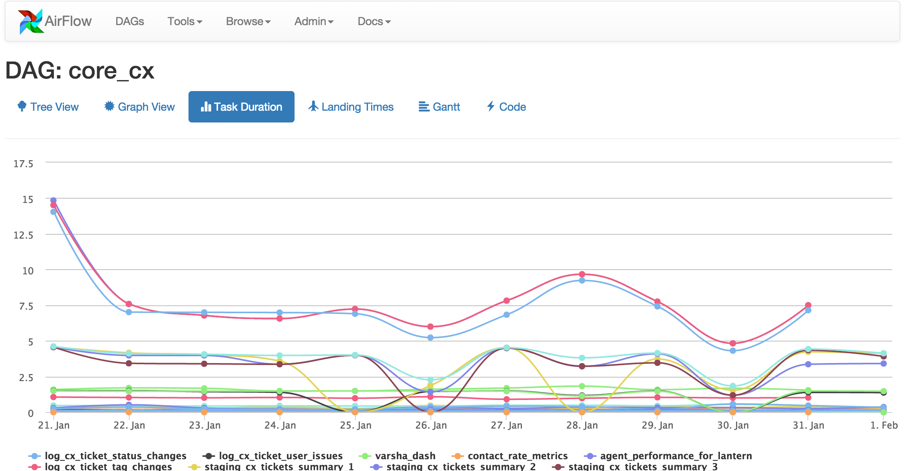

class: center, middle, inverse # Introduction to airflow #### [workflow scheduling and monitoring] ## [Manuel Pineda - [pin3da](//pin3da.github.io)] --- class: inverse # .subt[Agenda] - ### Motivation - ### DAG - ### Operators - ### Airflow Variables - ### Scheduler - ### Executors --- class: inverse # .subt[Motivation] ## .subt[Def and Origin] ## Airflow is a platform to programmatically author, schedule and monitor workflows. ## When workflows are defined as code, they become more maintainable, versionable, testable, and collaborative. Airbnb, Jun 2, 2015 https://medium.com/airbnb-engineering/airflow-a-workflow-management-platform-46318b977fd8 --- class: inverse # .subt[Motivation] (taken from airbnb post) ### .subt[Data warehousing:] cleanse, organize, data quality check, and publish data into our growing data warehouse ### .subt[Growth analytics:] compute metrics around guest and host engagement as well as growth accounting ### .subt[Experimentation:] compute our A/B testing experimentation frameworks logic and aggregates --- class: inverse # .subt[Motivation] (taken from airbnb post) ### .subt[Sessionization:] compute clickstream and time spent datasets ### .subt[Search:] compute search ranking related metrics ### .subt[Data infrastructure maintenance:] database scrapes, folder cleanup, applying data retention policies, … --- class: inverse # Common problems in those areas - ### Run periodic tasks - ### Schedule tasks - ### Describe dependencies between tasks --- class: inverse # .subt[DAG] ## .subt[Directed Acyclic Graph] ### Is a finite directed graph with no directed cycles. That is, it consists of finitely many vertices and edges, with each edge directed from one vertex to another. <img src="./images/dag.png" width="50%"> --- class: inverse # .subt[DAG] ## .subt[Vertices (Nodes)] ### Operations ## .subt[Edges] ### Dependencies --- class: inverse # .subt[DAG] ### Imports ```python """ Code that goes along with the Airflow tutorial located at: https://github.com/airbnb/airflow/blob/master/airflow/example_dags/tutorial.py """ from airflow import DAG from airflow import DAG from airflow.operators.python_operator import ( PythonOperator, ShortCircuitOperator, ) ``` --- class: inverse # .subt[DAG] ### Default args ```python default_args = { 'owner': 'Pereira Tech Talks', 'email_on_failure': False, 'email_on_retry': False, 'retries': 3, 'retry_delay': timedelta(minutes=30), 'start_date': airflow.utils.dates.days_ago(1), 'depend_on_past': True, # 'email': ['alerts@pereira-tech-talks.com'], # 'pool': 'backfill', # 'priority_weight': 10, # 'end_date': datetime(2016, 1, 1), } ``` --- class: inverse # .subt[DAG] ### DAG Creation ```python dag = DAG( dag_id='Sample DAG', default_args=default_args, # schedule_interval=schedule_interval, ) ``` Put your cron-like schedule_interval --- class: inverse # .subt[DAG] ### Operators (Nodes) ```python taskA = ShortCircuitOperator( task_id='check_source_file', python_callable=check_source_file, op_kwargs=dict( repo_params_key='source-fetch-task', delta=delta, ), provide_context=True, dag=dag ) taskB = PythonOperator( task_id='apply_transformations', python_callable=apply_transformations, op_kwargs=dict( repo_params_key='repository-original' transform_params_key='transformation-task', ), provide_context=True, dag=dag ) ``` --- class: inverse # .subt[DAG] ### Dependencies (Edges) ```python taskA.set_downstream(taskB) ``` --- class: inverse # .subt[Operators] - ### .subt[BashOperator] - executes a bash command - ### .subt[PythonOperator] - calls an arbitrary Python function - ### .subt[EmailOperator] - sends an email - ### .subt[HTTPOperator] - sends an HTTP request - ### .subt[SqlOperator] - executes a SQL command - ### .subt[Sensor] - waits for a certain time, file, database row, S3 key, etc... --- class: inverse # .subt[Operators] ### .subt[BranchOperator]  --- class: inverse # .subt[Variables] ### Variables are a generic way to store and retrieve arbitrary content or settings as a simple key value store within Airflow. ```python from airflow.models import Variable foo = Variable.get("foo") bar = Variable.get("bar", deserialize_json=True) ``` --- class: inverse # .subt[Variables] <img src="./images/variables.png" width="60%"> --- class: inverse # .subt[Scheduler] ### The Airflow scheduler monitors all tasks and all DAGs, and triggers the task instances whose dependencies have been met. Behind the scenes, it monitors and stays in sync with a folder for all DAG objects it may contain, and periodically (every minute or so) inspects active tasks to see whether they can be triggered. --- class: inverse # .subt[Executors] ### Sequential Executor - Development ### Local Executor - Development/Production ### Celery Executor - Distributed/Production --- class: inverse # .subt[Misc] ### Tree view  --- class: inverse # .subt[Misc] ### Sub Dags  --- class: inverse # .subt[Misc] ### Monitoring  --- class: inverse # .subt[Misc] ### Monitoring <img src="./images/gant.png" width="80%"> --- class: inverse # .subt[Misc] ### Monitoring <img src="./images/big-tree.png" width="80%"> --- class: inverse # .subt[Misc] ### CLI: - backfill - resetdb - initdb ### Logs: --- class: inverse # .subt[Wrapping up / Questions] - ### Motivation - ### DAG - ### Operators - ### Airflow Variables - ### Scheduler - ### Executors --- class: center, middle, inverse # Thanks Slides available at [pin3da.github.io/slides](//pin3da.github.io/slides/)